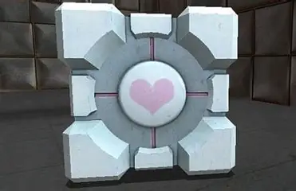
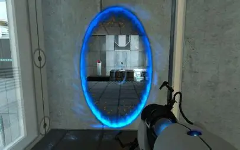
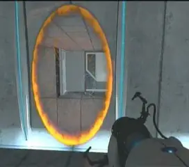
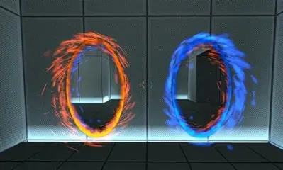
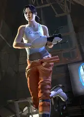

Portal

| 
|
Oque é Portal?
Portal é um jogo de ação/puzzle em primeira pessoa desenvolvido pela Valve. O jogo foi lançado em um pacote chamado The Orange Box para Microsoft Windows e Xbox 360 em 9 de outubro de 2007 e para PlayStation 3 em 11 de dezembro do mesmo ano. A versão para Windows do jogo é também disponível separadamente via o sistema de distribuição de conteúdo da Valve, Steam, e foi lançado como um produto autónomo em 9 de abril de 2008. Uma versão separada intitulada "Portal: Still Alive" foi lançada no sistema Xbox 360 Live Arcade em 22 de outubro de 2008; esta versão inclui 14 fases bônus. Em 12 de maio de 2014 a Nvidia lançou uma versão do jogo em Android exclusivamente para seu console portátil Nvidia Shield. Em fevereiro de 2022, uma coleção com o jogo e a sua sequência, Portal 2, intitulado de Portal: Companion Collection foi anunciado para o console Nintendo Switch.
O jogo consiste basicamente de uma série de enigmas que devem ser solucionados ao teletransportar o personagem do jogador e outros objetos simples usando o "Aperture Science Handheld Portal Device" ("ASHPD", também conhecido como "Portal Gun"), um utensílio capaz de criar um portal interespacial entre superfícies planas. O personagem do jogador é desafiado por uma IA chamada "GLaDOS" para completar cada fase no "Aperture Science Computer-Aided Enrichment Center" usando a Portal Gun com a promessa de receber bolo quando todas as fases forem completadas. A física incomum criada pelo Portal Gun é a ênfase da jogabilidade do jogo, e é uma extensão de um conceito de portal semelhante em Narbacular Drop; vários dos membros do time DigiPen Institute of Technology que trabalharam em Narbacular Drop foram contratados pela Valve para a criação de Portal.
Portal tem sido aclamado como um dos mais originais jogos de 2007 apesar da sua duração relativamente curta. O jogo foi elogiado pela sua jogabilidade única e o seu enredo sombriamente humorístico, criado com a assistência de Erik Wolpaw e Chet Faliszek da fama "Old Man Murray". Ele também recebeu elogios pela personagem GLaDOS, que foi dublada por Ellen McLain na versão em inglês, e pela música dos créditos finais intitulada "Still Alive", composta por Jonathan Coulton especialmente para o jogo. A popularidade de Portal levou à criação de merchandise oficial por parte da Valve, incluindo Companion Cubes de pelúcia, e criações de fãs como recriações do bolo e réplicas do "Portal Gun".
Sequela
Portal 2
Portal 2 é um jogo eletrônico de quebra-cabeça em plataformas desenvolvido e publicado pela Valve Corporation. O jogo foi lançado em abril de 2011 para as plataformas Microsoft Windows, macOS, Linux, PlayStation 3 e Xbox 360. A versão digital para computadores é distribuída pelo Steam, o serviço online da Valve, enquanto todas as edições de varejo foram distribuídas pela Electronic Arts. Em fevereiro de 2022, uma coleção com os dois títulos, intitulado de Portal: Companion Collection foi anunciado para o console Nintendo Switch.
Da mesma forma que no jogo original Portal (2007), os jogadores resolvem quebra-cabeças colocando portais e se teletransportando entre eles. Portal 2 adiciona recursos, incluindo raios laser, pontes de luz e géis semelhantes a tintas que alteram o movimento do jogador ou permitem que portais sejam colocados em qualquer superfície. Na campanha para um jogador, os jogadores controlam Chell, que explora um abandonado Centro de Enriquecimento da Aperture Science durante sua reconstrução pelo supercomputador GLaDOS (Ellen McLain); novos personagens incluem o robô Wheatley (Stephen Merchant) e o fundador da Aperture Cave Johnson (J. K. Simmons). No novo modo cooperativo, os jogadores resolvem quebra-cabeças controlando os robôs Atlas e P-Body (ambos dublados por Dee Bradley Baker). Jonathan Coulton em conjunto com a banda The National produziram músicas para o jogo.
A Valve anunciou Portal 2 em março de 2010 e o promoveu como jogos de realidade alternativa incluindo o Potato Sack, uma colaboração com vários desenvolvedores de jogos independentes. Após o lançamento, a Valve lançou conteúdos para download e um editor de mapas simplificado para permitir aos jogadores criar e compartilhar níveis do jogo. Portal 2 recebeu elogios por sua jogabilidade, curva de aprendizagem equilibrada, ritmo, humor negro, escrita e atuação, sendo considerado um dos melhores jogos eletrônicos da história por inúmeras publicações e críticos.
Algum Conteúdo do Jogo
| Portal Gun | Companion Cube | Portal Azul |
|---|---|---|
 |
 |
 |
| Portal Laranja | Ambos os Portais Lado a Lado |
O Personagem do Jogador |
 |
 |
 |
Onde Conseguir o Jogo?
Site da Steam: https://store.steampowered.com/
Página de Portal: https://store.steampowered.com/app/400/Portal/
Página de Portal 2: https://store.steampowered.com/app/620/Portal_2/